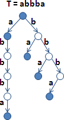
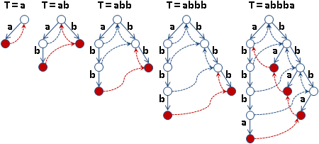
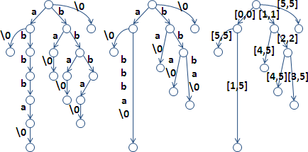
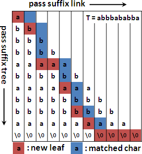

String Matching
運用後綴處理字串匹配問題
兩步驟：枚舉T的所有後綴、搜尋開頭恰為P的後綴。
字串匹配時，P的每個對齊位置，正是T的每個後綴的開頭。儘管後綴意指字串後端，但是此處我們關注後綴前端。
T: mississippi P: issi all suffixes of T: mississippi, ississippi, ssissippi, ... string matching: 0 1 2 mississippi ississippi ssissippi ... issi issi issi
儲存大量後綴的資料結構
以大量字串的資料結構，儲存並排序T的全部後綴，就更容易搜尋後綴。例如Array、Binary Tree、Trie、Automaton。
後綴之間有許多重複字元。刪除重複字元，得以精簡空間大小、增進排序速度，得到更好的資料結構：
build string matching
----------------- -------- ---------------
suffix array O(T+A) O(PlogT)
+ lcp array O(T+A) O(P+logT)
suffix trie O(T^2) O(P)
suffix tree O(T) O(P)
suffix automata O(TA) O(P)
大量Suffix資料結構: Suffix Array
Suffix Array
「後綴陣列」。一個字串的全部後綴，統統放入陣列。排序所有後綴，以利之後搜尋。
一個索引值表示一個後綴。後綴陣列的空間複雜度為O(T)。
string:
mississippi
all suffixes:
mississippi, ississippi, ssissippi, sissippi, issippi,
ssippi, sippi, ippi, ppi, pi, i
suffix array:
+---+------+---------+------------+-------------+- -+
| i | ippi | issippi | ississippi | mississippi | ... |
+---+------+---------+------------+-------------+- -+
suffix array:
+---------+--------+--------+--------+- -+
| [10,10] | [7,10] | [4,10] | [1,10] | ... |
+---------+--------+--------+--------+- -+
suffix array:
+----+---+---+---+---+---+---+---+---+---+---+
| 10 | 7 | 4 | 1 | 0 | 9 | 8 | 6 | 3 | 5 | 2 |
+----+---+---+---+---+---+---+---+---+---+---+
suffix array:
| sa | suffix
---+----+------------
0 | 10 | i
1 | 7 | ippi
2 | 4 | issippi
3 | 1 | ississippi
4 | 0 | mississippi
5 | 9 | pi
6 | 8 | ppi
7 | 6 | sippi
8 | 3 | sissippi
9 | 5 | ssippi
10 | 2 | ssissippi
suffix array:
+------------------------+
| 10 7 4 1 0 9 8 6 3 5 2 |
+------------------------+
i i i i m p p s s s s
p s s i i p i i s s
p s s s i p s i i
i i i s p s p s
p s i i i p s
p s s p i i
i i s p p
p i i p
p p i
i p
i
演算法（Quicksort）
以快速排序法排序所有後綴。運用內建函式庫，即可輕鬆實作。每個後綴的長度都不同，名次必不同，毋須特地使用stable sort。
兩個後綴比大小需時O(T)，兩兩比較次數是O(TlogT)，時間複雜度為O(T^2 * logT)。
演算法（Radix Sort）
字元種類有限、範圍有限，適用Radix Sort。時間複雜度為O((T+A) * T)，其中A為字元種類數目。
演算法（Prefix-doubling Algorithm）
Radix Sort和Prefix-doubling Algorithm有些相似。
Radix Sort：各回合拿倒數第一個、倒數第二個、倒數第三個、……字元實施排序，總共T回合。每回合採用Counting Sort。
Prefix-doubling Algorithm：各回合拿前一個、前二個、前四個、前八個、……字元實施排序，總共logT回合。每回合可以採用Quicksort或Counting Sort。
運用上回合的排序結果，先比前半段、再比後半段，不必逐個字元比較。用一個字元的排序結果，拼成兩個字元的排序結果；用兩個字元的排序結果，拼成四個字元的排序結果；以此類推。
【待補圖片】
每回合採用Quicksort，時間複雜度為O(logT * TlogT) = O(T * (logT)^2)。
每回合採用Counting Sort，時間複雜度降為O(logT * (T+A))，其中A為字元種類數目。
演算法（DC3 Algorithm）
運用Divide and Conquer以及Radix Sort，全部後綴分成三類，分別處理。時間複雜度為O(T+A)，但是不實用。
一、所有後綴根據開頭位置分成兩堆， 開頭位置模三之後，餘零者為S0，餘一或二者為S12。 二、用radix sort排序S12，僅排序前三個字元。 平手者，才繼續排序下三個字元。 途中可以隨時利用已經排序好的部份。 三、利用排序完畢的S12，來排序S0。 四、合併S12與S0。
程式碼不太優雅，這裡就不講解了。原始論文有提供程式碼。
演算法（Baier's Algorithm）
https://www.uni-ulm.de/fileadmin/website_uni_ulm/iui.inst.190/Mitarbeiter/baier/gsaca.pdf
時間複雜度為O(T+A)。我沒有研究，乍看是目前最務實的演算法，似乎使用了Disjoint Sets。原始論文有提供虛擬碼。
字串匹配
已排序陣列，使用Binary Search。時間複雜度為O(PlogT)。
大量字串匹配
將所有T連成一串，以'\0'隔開，然後建立後綴陣列。每個P分別做二分搜尋。
想讓排序結果正確，隔開字元的字典順序必須小於T的每個字元。大家習慣用'\0'。
UVa 10526 10580
大量Suffix資料結構: Longest Common Prefix Array
Longest Common Prefix
一堆字串的「最長共同前綴」只有一個，有可能是空字串。
演算法很簡單：字串們一齊從頭開始比對字元。
s1: aabbccc s2: aabbbccc s3: aabaccc s1 s2 s3 的 LCP 就是 aab。
兩個後綴的LCP
string:
abbbababba
suffixes:
s0: abbbababba
s1: bbbababba
s2: bbababba
......
s8: ba
s9: a
LCP(s1, s2) = bb
LCP(s0, s9) = a
兩個後綴的LCP，
就是排序全部後綴之後，兩個後綴之間的所有後綴的LCP。
+---------------------+
sa | 9 4 6 0 8 3 5 7 2 1 |
+---------------------+
0 1 2 3 4 5 6 7 8 9
---------------------
a a a a b b b b b b
b b b a a a b b b
a b b b b a a b
b a b a b b a
b a b a a b
a b b b a
a a b b
b a b
b a
a
LCP(7th, 9th) = LCP(7th, 8th, 9th) = LCP(s7, s2, s1) = bb
LCP(4th, 8th) = LCP(4th, ..., 8th) = LCP(s8, ..., s2) = b
開頭相近的後綴，排在一起；開頭不相近的後綴，被開頭相近的後綴隔開。
排序全部後綴之後，兩個後綴之間的所有後綴的LCP，
就是兩兩相鄰後綴的LCP們的LCP。
LCP(7th, 9th) = LCP( LCP(7th, 8th), LCP(8th, 9th) ) = bb LCP(4th, 8th) = LCP( LCP(4th, 5th), ..., LCP(7th, 8th) ) = b
以相鄰後綴的LCP，推導出任意後綴的LCP。
兩兩相鄰後綴的LCP，表達成數值：
Longest Common Prefix Array
直接記錄LCP字串，浪費大量記憶體空間，因而改為記錄LCP長度。輔以原字串、後綴陣列，便可得到LCP字串。
排序全部後綴之後，每一個後綴與前一個後綴的LCP長度，儲存於陣列，得到LCP Array。
+---------------------+
sa | 9 4 6 0 8 3 5 7 2 1 |
+---------------------+
lcpa | 0 1 2 3 0 2 3 1 3 2 |
+---------------------+
0 1 2 3 4 5 6 7 8 9
---------------------
a a a a b b b b b b
b b b a a a b b b
a b b b b a a b
b a b a b b a
b a b a a b
a b b b a
a a b b
b a b
b a
a
LCP_length(7th, 9th) = min(lcpa[7+1], ..., lcpa[9]) = 2
LCP_length(4th, 8th) = min(lcpa[4+1], ..., lcpa[8]) = 1
兩個後綴的LCP，藉由LCP Array，變成了查詢區間最小值。請參考「偽線段樹」。
UVa 12338
演算法
依序計算兩兩相鄰後綴的LCP，依序填寫LCP Array。時間複雜度O(T^2)。
演算法
運用小技巧，建立LCP Array僅需時O(T)。
一個字串的後綴，開頭去掉一個字元，仍是後綴。
兩個相鄰後綴，開頭各去掉一個字元，得到兩個新後綴。雖然不見得相鄰，但是大小關係依然相同。LCP則少了一個開頭字元。
2 3 7 9
---------------------
a a b b
b b b b
b b a b
a b a
a b
b a
a b
b b
b a
a
abba < abbbababba => bba < bbbababba
LCP(abba, abbbababba) = a + LCP(bba, bbbababba)
LCP_length(abba, abbbababba) = 1 + LCP_length(bba, bbbababba)
兩個新後綴的LCP長度，小於等於第二個新後綴、與其前方相鄰後綴的LCP長度。
LCP_length(2th, 3th) - 1 = LCP_length(7th, 9th) ≤ LCP_length(7th, 8th) LCP_length(3-1th, 3th) - 1 ≤ LCP_length(8-1th, 8th)
從最長的後綴（原字串）開始，逐次去掉開頭字元，跳著填寫LCP Array。
3th: abbbababba 9th: bbbababba 8th: bbababba LCP(3-1th, 3th) --> LCP(9-1th, 9th) --> LCP(8-1th, 8th) --> ...
每次LCP減少一個開頭字元之後，新後綴與其相鄰後綴的LCP只會一樣長、更長。不必每次從頭開始比對字元。
一、依序掃描原字串的每個後綴。每次都會少掉一個開頭字元： 甲、求得該後綴在後綴陣列裡的位置。 乙、再找出上一個相鄰後綴。 丙、逐一比對字元，求出LCP長度，儲存於LCP Array。 丁、下次就可以從LCP長度減一開始比對字元。小心不能減至負值。
字串匹配
一、T的Suffix Array。O(T+A)。 二、T的LCP Array。O(T)。 三、LCP Array的偽線段樹。< O(T), O(logT) >。 用來快速求得LCP(i,j)。 四、二分搜尋。
令二分搜尋的三個指標是L M R。二分搜尋的過程是：逐字比對P與M，判斷P < M或者P > M，讓M' = L或者M' = R。時間複雜度O(PlogT)。
M與L R經常有共同前綴。P與M比大小，可以從LCP(L,R)開始比對，節省一點時間。然而時間複雜度仍是O(PlogT)。
P與L R經常有共同前綴。P與M比大小之前，可以預先計算LCP(M,L)、LCP(M,R)，如果小於LCP(P,L)、LCP(P,R)，就毋需比對。看誰長得像，直接得到M'。時間複雜度降至O(P+logT)。
預先建立LCP Array與「偽線段樹」，從LCP Array查詢區間最小值，得以迅速求得LCP。
一、P與M的共同前綴，往後不必再比對，O(P)。二、查詢區間最小值，區間逐次減半，O(logT + logT/2 + logT/4 + ... ) = O(logT)。三、總時間複雜度O(P+logT)。
【待補程式碼】
ICPC 4657
大量Suffix資料結構: Suffix Trie
普通的建立方法
把一個字串的所有後綴，統統塞入一棵Trie。
時間複雜度為O(T^2)，空間複雜度為O(T^2 * A)。
運用suffix link的建立方法
先前介紹Aho-Corasick Algorithm曾經提過suffix link：每個節點各自牽一條線到次長後綴所在節點。
運用suffix link，就能online建立Suffix Trie，而且不必重覆遍歷已經建立的節點。每加入一個字元，就從最深的節點開始走訪suffix link、建立新節點。
加入所有字元之後，記得標出每個後綴所在節點。
時間複雜度仍是O(T^2)，空間複雜度仍是O(T^2 * A)。
字串匹配
從T找到一個P：從樹根開始走訪Suffix Trie，看看有沒有P。時間複雜度O(P)。
從T找到全部P：建立Suffix Trie的時候，每個節點都必須額外記錄有哪些後綴經過。
大量Suffix資料結構: Suffix Tree
Suffix Tree
「後綴樹」是Suffix Trie的改良版本：
一、字串結尾添加一個從未出現的字元（例如'\0'），再來建立Suffix Trie。如此一來，後綴結尾總是出現在樹葉，不會出現在內部節點，就不必特別記錄後綴所在節點。
二、去除沒有分叉的節點，一串樹枝合併成一根樹枝。
三、樹枝上的子字串，改為兩個索引值、或者兩個指標。
後綴樹共T+1個樹葉。字元皆相同，節點最多，共2T+1個節點；字元皆不同，節點最少，共T+2個節點。空間複雜度O(TA)。
演算法（Ukkonen's Algorithm）
http://www.csie.ntu.edu.tw/~hil/algo2011spring/algo2011spring09.pptx
運用suffix link，是online演算法，時間複雜度為O(T+A)。
樹葉終身是樹葉。每次加入一個字元、要建立新節點時，不必回到最深的節點，可以從當前的節點繼續。
演算法（Farach's Algorithm）
時間複雜度O(T)。時間複雜度不含字元數量，是真正的線性時間，但是不實用，參考看看就好。
http://www.cs.rutgers.edu/~farach/pubs/Suffix.pdf
字串匹配
從T找到一個P：從樹根開始走訪後綴樹，看看有沒有P。時間複雜度O(P)。
從T找到全部P：從後綴樹找到P之後，遍歷子樹。P在T當中的出現次數，就是子樹的葉子數量。P在T當中的出現位置，就是 [ T長度 - 葉子深度 , T長度 - 葉子深度 + 當前節點深度 ]。
後綴樹是二元樹，內部節點數量等於葉子數量減一。因此子樹最多2K-1個節點，K是出現次數。時間複雜度O(P+K)。
大量Suffix資料結構: Suffix Tray
Suffix Tray
Suffix Tree和Suffix Array一併使用。
http://cs.nyu.edu/cole/papers/suffix-trays.pdf
http://courses.csail.mit.edu/6.851/spring07/scribe/lec09.pdf
大量Suffix資料結構: Suffix Automaton